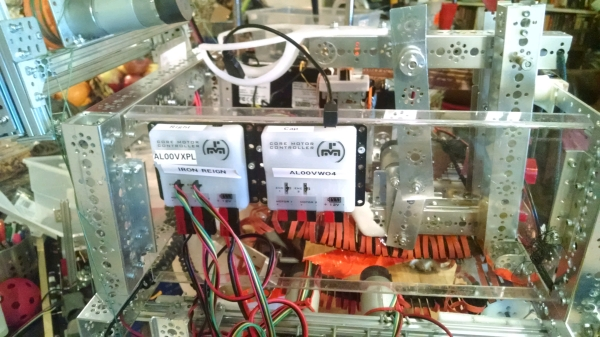
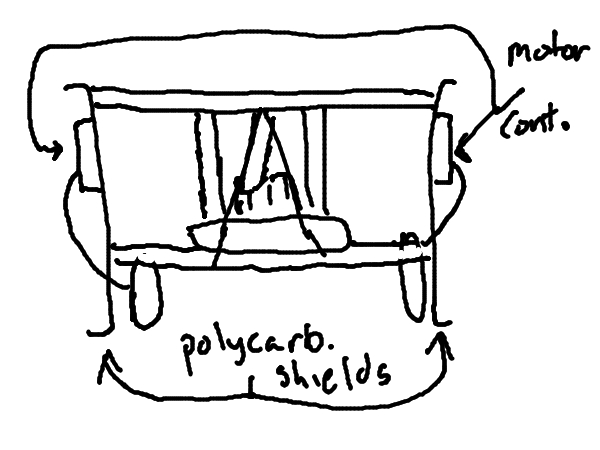

Throughout the year, we've dealt with static issues with our robot, as shown here and here. And, now that we've pretty much gotten autonomous and the lift out of the way, the static was our only remaining issue.

To prevent the static shocks, we needed to isolate the motor controllers and other parts from the metal section of the frame. This was achieved by adding a polycarbonate shield on each side, and mounting the corresponding motor controllers. However, we had to partially remove the swinging arms that we created in the last post in order to mount the siding. We plan to add LEDs on each side of the robot to give the robot some "bling".
The polycarbonate siding in conjunction with staticide should give us a huge advantage in the robot game for the Jan. 14 tournament. As well, it may net us some design points, as it is a solution to a problem that many FTC teams suffer from.